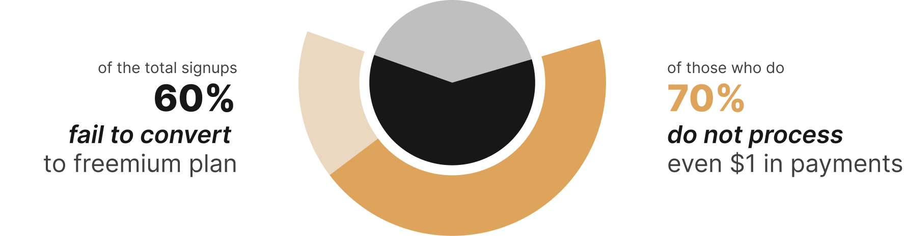

Product Led Growth: Enhancing Product Onboarding for Improved Funnel Conversion
The Problem
Chargebee, a subscription management platform, faced challenges with converting Signups to Freemium customers and inturn into paying users. I led a comprehensive research initiative aimed at understanding why a significant portion of signups failed to convert. This case study follows the journey from my initial research to designing solutions as a Product Designer.
My Role
My role was multifaceted, involving various responsibilities. I connected with Product Manager and Engineer to ensure a clear understanding of the problems being addressed and provided clarity on the solution and design of the user interface. I also provided mentorship to a junior designer, offering guidance when needed and collaborating on visual design. I worked closely with UX writers to craft user-friendly copy that aligned with Chargebee's tone and effectively guided users through their tasks.
Team Members
- Ayush Aggarwal, Product Manager
- Bharathvaj Ganesan, Engineer
- Dheepaknarayan, Associate Designer
- Tara Rachel Thomas, UX Writer
- Maya Subramanian(me), Lead Designer
Learnings
- Embracing Challenges: Overcoming hurdles, like low survey responses and customer engagement, wasn't easy. However, the key was acknowledging these difficulties, learning from mistakes, and maintaining an unending sense of curiosity.
- Value Collaboration and Feedback: To have an open mind when giving and receiving feedback. While working with different individuals, I came to understand that collaborating and feedback can occasionally slow us down. However, it's the skill of sifting through the noise, identifying what's essential, and using it as a guide that ultimately leads the team toward success.
- Ever evolving Approaches: It's not just about solving problems; it's about deeply understanding users, translating insights into user-centered design, and continually experimenting to create meaningful impact. The process isn't linear; it's an ever-evolving cycle of improvements.
Research
In this phase, we conducted surveys that revealed a key insight. Startup founders begin looking for billing and subscription management tool at a very early stage, even before having a product to sell.
There is opportunity to aid startups from a very early stages. However, that is for another topic. Subsequently, our focus shifted to addressing the freemium users and their value perception.
of signup users
lacked a market-ready Product
Interviews with Freemium customers exposed issues affecting user perceptions of value. Our findings indicated that users struggled to understand the benefits of the free plan and often felt overwhelmed by the array of features. Additionally, user goals primarily centered around setting up the 'Subscribe' button, highlighting a lack of guidance in this area.
How to get the Subscribe Button to work on my website?
From the research, several key insights emerged:
- The free plan's benefits weren't clear to users.
- Overwhelming features hindered understanding of Chargebee's value.
- Lack of familiarity with subscription business pain-points affected value perception.
- Users needed assistance transitioning between TEST and LIVE sites.
Recommendations included:
- Defining startup-specific onboarding.
- Emphasising essential features.
- Implementing a guided setup checklist to streamline user progression.
Upon joining the PLG (Product-Led Growth) team, I identified opportunities to expand the top-of-funnel, reduce friction from product experience, add capabilities to evaluate and onboard to Chargebee in a self-serve manner based on research insights.
Objective
Exponentially increase Chargebee's pace of customer acquisition by perfecting a low-cost + self-serve channel for product adoption. By doing this, we will be able to add incremental ARR to the business at a much lower cost, reduce the time taken for users to see value from Chargebee, and increase business growth from Startups who primarily prefer a faster, self-serve mode of product evaluation.
Goals
Increase the # of customers that process>0$ in a self-serve manner.
Constraints and Challenges
- Lack of Cross-Team Cooperation: Gaining buy-in from other squads to implement modifications in areas they owned proved to be a hurdle, hindering the necessary changes.
- Integration Challenges: Developing new user experiences sometimes conflicted with the existing product experience, leading to integration difficulties.
- Technical Limitations: Absence of a dedicated back-end engineer, which limited our ability to modify the technical architecture and tackle existing technical debts within the product.
Exp 1: Friction free Account claim flow
We aimed to address a 48% drop-off between Signup and users claiming their test site, a critical point in the funnel.
Objective:
- Reduce the drop-off from Signup → Site Claim step by directing users to the Account Claim flow.
- the % of users completing the Account Claim flow by reducing friction
Hypothesis:
- A more prominent redirection to the Account Claim flow can improve Verification % & Claim %
- Currently, the Account Claim flow is broken down into 4 distinct steps, with a lot of redundant & non-relevant inputs
- Redesigning the Account Claim form and removing redundant steps can help increase Signup → Claim %
Results
Site Claim rates improved by 50%
Downstream performance including Site Activations, Disco Calls, and Retention also improved notably
Exp 2: Building a Get Started Checklist
A step-by-step checklist to introduce core features, better user understanding and improved funnel conversion.
Objective:
Reduce the drop-off in Signup → Processing funnel by handholding and educating users about the product & core features.Hypothesis:
-
Re-designed Get Started modal with clear steps will:
- Enable users to reach the Aha! Moment by seeing the buffet of settings Chargebee provides
- Handhold the users in product configuration, and hence as a result improve Funnel Conversion (more users will evaluate the product → more users go-live)
Results
Positive user feedback (85% acceptance via survey)
35% increase in freemium plan processing sites
15% uptick in site activations
Insights
- The checklist design provides a great way to get PQL Data.
- Checklist engagement drops after the first category. Prioritizing relevant steps at the top is essential.
- As users spend more time on the "Get Started" page, Site Activation rates notably rised.
Exp 3: Interactive Chargebee Demo
New signups are currently directed to the product without any tutorial or guidance. Research indicates that new users often feel overwhelmed by the complexity of Chargebee's features and data. To address this, we created a simulator that starts with a demo Pricing Page and guides merchants on how to quickly derive value from Chargebee.
Objective:
Reduce the drop-off in Signup → Processing funnel by handholding and educating users about the product & core features.Hypothesis:
- An Interactive Chargebee Demo will increase the probability that users will be able to understand Chargebee’s value proposition
- This in turn will improve Funnel Conversion (more users will evaluate the product, go-live and eventually start Processing)
Results
Product engagement increased by 30%
Aha moment (creating a plan) rose by 15%
Overall engagement with the left navigation increased by 22%
Insights
- Initial handholding can help users navigate the product more easily, increasing their curiosity to explore more
- The step-by-step funnel conversion demonstrates that the greater the number of simulator flow steps completed by the user, the more likely they will move up further in the funnel (create plan, book call, activate)
- Payment links have the most users in conversion funnels (create plan, book call, activate) among the integration options available
In my 8 months with the PLG team, we conducted numerous A/B experiments. While I've focused on three key experiments for this case study, there were many more worth discussing. Here's our approach after each experiment:
- User-Centric Approach: After each experiment, we meticulously evaluated the results and observed user interactions through FullStory.
- Iterative Refinement: We used the insights from these experiments, coupled with user feedback, to iteratively improve our solutions.
- Rollout Decisions: Decisions to implement changes to a broader user base were based on the data-driven insights we gained.
- Continuous Problem-Solving: This iterative process continuously guides us in identifying the next challenge to tackle.
Indeed, PLG should be a foundational mindset when approaching problem-solving. A product or feature that's user-friendly and easy to set up leaves a lasting impact, fostering both user growth and retention. In today's tech-driven landscape, a self-serve product offers a substantial market advantage, enabling it to essentially sell itself. My experience with the PLG team has instilled this mindset in me, and I've carried it forward into other projects.


Incorrect password. Please try again.
Password Protected
Please enter the password to access this page. ⬆